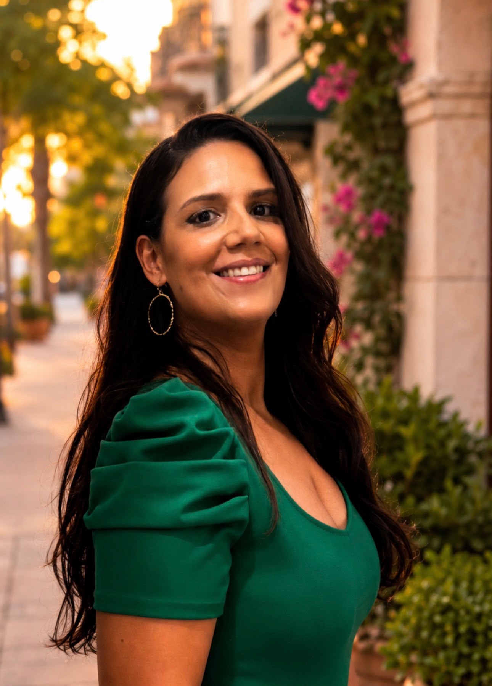

Clinical research
Research sites, academic centers, hospitals, and trial teams may offer paths involving study coordination, participant-facing research, documentation, compliance, and trial operations.
If you are wondering what you can do with a foreign medical degree in the United States—whether you did not match, no longer want residency, or are exploring nonclinical work—FMG to Pharma helps you evaluate realistic paths in clinical research, pharma, biotech, CROs, and related life-sciences careers.
A foreign medical graduate (FMG), also commonly called an international medical graduate (IMG), earned a medical degree outside the United States. U.S. residency is generally part of the path to independent clinical practice, but it is not a universal requirement for nonclinical work in the life-sciences industry.
Your realistic options depend on your experience, location, work authorization, and each employer's requirements. The goal is not to apply everywhere—it is to understand which role families value what you already know and which specific gaps you may still need to close.
Research sites, academic centers, hospitals, and trial teams may offer paths involving study coordination, participant-facing research, documentation, compliance, and trial operations.
Pharmaceutical and biotechnology companies include functions such as clinical operations, drug safety, regulatory affairs, medical affairs, medical writing, and clinical science. Requirements vary substantially by role.
A contract research organization (CRO) supports clinical trials for sponsors. Roles may involve trial support, monitoring, project coordination, data, safety, quality, or study management.
Depending on your background, related options may include research administration, quality and compliance, health communications, evidence generation, or other work that uses medical knowledge outside direct patient care.
Clinical research, pharma, biotech, and CROs contain many different career paths. Start by identifying roles that make sense for your actual background rather than applying everywhere.
A medical CV does not automatically communicate what industry employers need to see. Learn how clinical, research, academic, and healthcare experience translates into industry language.
Determine whether your biggest gap is experience, positioning, targeting, geography, interviewing, or something else—before automatically spending money on another degree or certification.

I’m a foreign medical graduate from the Dominican Republic, and long before I built a career in the pharmaceutical industry, I was simply a recently-graduated doctor trying to figure out what my medical degree could mean for me in the United States.
I know how confusing that place can feel.
You spend years studying medicine, working hard, and building an identity around becoming a physician—and then suddenly, the path forward isn’t as clear as you thought it would be. When residency isn’t the path you take, it can be difficult to see what else is possible. I certainly didn’t grow up knowing that careers in clinical research or pharma even existed for someone like me.
But there was another path.
For more than 14 years, I’ve built my career in clinical research and the pharmaceutical industry, earned a Master’s degree in Clinical Research Administration from The George Washington University, became SOCRA-certified, and ultimately grew into senior clinical trial management roles within pharma.
And somewhere along the way, I realized something that I wish someone had told me much earlier:
Your medical degree is not wasted just because you don’t practice medicine in the traditional way.
The knowledge, discipline, critical thinking, resilience, and perspective we develop as physicians can be incredibly valuable in this industry. The challenge is learning where you fit, how the industry works, and how to translate everything you already bring to the table into a career employers understand.
That’s why I created FMG to Pharma.
Not because I believe everyone should leave medicine or pursue pharma, but because I believe FMGs deserve to know that they have options—and to get realistic guidance from someone who has actually walked a similar road.
Outside of my career, I’m also a mom, a daughter, a sister, and someone who understands that career decisions rarely happen in a vacuum. There are bills, families, immigration stories, responsibilities, dreams, disappointments, and sometimes a lot of starting over behind them.
So when you come here, I don’t just see a résumé.
I see the person behind it.
My goal is to help you understand what is realistically possible, identify where your background may fit, and make smarter decisions about your next step—without false promises, unnecessary degrees, or spending years chasing a path that may not be right for you.
If my journey can make yours a little clearer, then FMG to Pharma is doing exactly what I created it to do.
Answer a few questions about your background, current experience, job search, and goals. You’ll receive a practical read on the part of your transition that may be worth addressing first.
This is not a generic “Which pharma job are you?” quiz. Different FMGs enter the industry from very different starting points, and the right next step depends on what you have actually done so far.
These answers provide general career education. Role requirements, work authorization, licensure, and employer policies vary.
Depending on your experience, work authorization, and an employer's requirements, you may explore nonclinical paths such as clinical research, clinical operations, pharmacovigilance, regulatory affairs, medical affairs, medical writing, and other life-sciences roles. A U.S. medical license is not required for every nonclinical role.
Many nonclinical clinical-research roles do not require completion of a U.S. residency. Eligibility still depends on the role, employer, relevant experience, location, and work authorization.
Many pharmaceutical-industry roles are nonclinical and do not require an active U.S. medical license. Requirements vary, and some specialized roles may require licensure, board certification, or specific experience.
Not matching does not mean your medical education has no value. Your next step depends on whether residency remains your goal or you want to explore a durable career outside clinical practice.
Not automatically. Before paying for another degree or certification, compare your current experience with the repeated requirements of realistic target roles and identify the specific gap you need to close.
No. FMG to Pharma provides educational career guidance and professional positioning resources. It does not guarantee interviews, employment, sponsorship, salary, or immigration outcomes.
Questions about the Career Reality Check or FMG to Pharma? Get in touch.